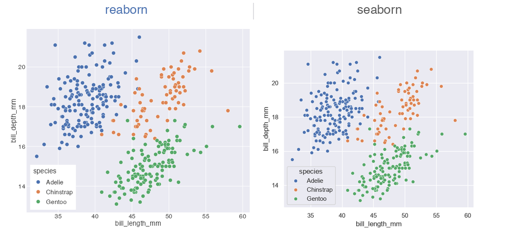

Write the exact seaborn call you already know — same function names, arguments, and defaults — and get a plot that’s visually indistinguishable from Python. Every result is a real ggplot, so you can keep extending it with the full grammar of graphics.
library(reaborn)
penguins <- load_dataset("penguins")
# This is literally seaborn code — it runs verbatim in R:
sns.scatterplot(data = penguins, x = "bill_length_mm", y = "bill_depth_mm", hue = "species")Same code. Same plot.

Why reaborn
Your seaborn code, verbatim
Every function name, argument, and default mirrors seaborn exactly. library(reaborn) sets the seaborn theme and palette globally, exposes sns.-prefixed aliases, and binds True/False/None — so seaborn examples run in R with zero edits.
Exact numbers, indistinguishable plots
The constants are tested against the real thing: palettes match seaborn’s hex codes to the digit, KDEs reproduce scipy.stats.gaussian_kde to machine precision, and histogram bins match numpy.histogram_bin_edges. The rendered output is visually indistinguishable from seaborn, not byte-identical.
Every plot is a ggplot
reaborn doesn’t just look like ggplot — each plot is a ggplot object. Extend any chart with the full grammar of graphics, something seaborn fundamentally can’t do.
seaborn defaults, on import
The five seaborn styles across four contexts (paper/notebook/talk/poster) and every palette ships built in and applies globally — just like sns.set_theme().
Bootstrap CIs, done right
Confidence intervals use seaborn’s bootstrap resampling, not ggplot’s analytic standard error. Your barplot, pointplot, lineplot, and regplot error bars match seaborn’s.
Pure R, zero Python
No reticulate, no Python install, no environment to manage. Just R, ggplot2, and a light dependency footprint — backed by 277 passing tests.
It’s a ggplot — so keep building
A seaborn call gets you the look and the statistics in one line. Because the result is an ordinary ggplot, the grammar of graphics is yours from there:
scatterplot(data = penguins, x = "bill_length_mm", y = "bill_depth_mm", hue = "species") +
ggplot2::facet_wrap(~island) +
ggplot2::scale_x_log10() +
ggplot2::labs(title = "Penguin bills")Frequently asked
Is there a seaborn for R? Yes — reaborn. It implements all ~40 seaborn functions with identical names, arguments, and defaults.
How do I use seaborn in R? Install reaborn, call library(reaborn), and write seaborn code. sns.scatterplot(data=penguins, x="bill_length_mm", y="bill_depth_mm", hue="species") runs verbatim.
Can I use seaborn plots with ggplot2? Yes, and it’s reaborn’s edge over seaborn — every plot is a real ggplot you can extend with + facet_wrap(), + scale_*(), + theme(), and more.
Do reaborn plots look exactly like seaborn? They’re designed to be visually indistinguishable: hex-exact palettes, scipy-precise KDEs, numpy-exact bins, and seaborn’s bootstrap CIs.
Install
install.packages("reaborn")Or install the development version from GitHub:
# install.packages("remotes")
remotes::install_github("shawntz/reaborn")